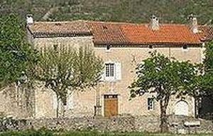
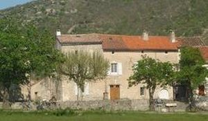
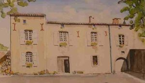

Recensement Jean-Claude Truffet



| Département | 30 — Gard |
| Canton | Le Vigan |
| Commune | Vissec |
| Type d'édifice | Manoir |
| Période d'origine | XV |
VISSEC, en 1570 fief de Jacques de Montfaucon, seigneur, président à la cour des aides de Montpellier, baron d'Hierle puis marquis de Vissec. Dépendait de la baronnie d'Hierle. Christophe de Montfaucon fait réparer la forteresse vers 1646. Le 22 juillet 1654, Pierre de Montfaucon et sa bande sont condamnés à mort par le tribunal de Castres, Le démantèlement a lieu du 26 au 28 juin 1656, mais Pierre de Montfaucon court toujours. Il est arrêté en 1660 et incarcéré à la Conciergerie à Paris. En 1668, Il est libéré grâce à lintervention du prince de Conti, Louis Armand Ier de Bourbon-Conti. Le 18 février 1668, il signe un acte en son château de Vissec en faveur du prieur de Navacelle Anne-Jacquette du Faur de Pibrac, deuxième épouse de Pierre Vissec, pour son époux, puis pour son fils Michel. Michel de Montfaucon, marquis de Vissec, baron d'Hierle réside au Vigan, mais séjourne aussi à Vissec, dans la partie du château féodal, réaménagée en manoir, À la mort dAnne de Crouzet, veuve de Michel Marc Antoine César de Montfaucon, en 1762, Jean Alexandre de la Tour du Pin de Gouvernet, beau-frère de la défunte, hérite des biens et des titres de Vissec. En 1792, les biens appartenant à Alexandre-César de La Tour du Pin, marquis de Vissec deviennent des biens nationaux. Le château est pillé. Des lots sont établis pour la mise aux enchères du domaine. Maître Jean-Jacques Capion, notaire au Vigan, les achète tous sauf un, qui est exclusivement composé de terres et qui est acheté par des habitants de Vissec. Le 7 octobre 1862, Louis-Eugène Capion, propriétaire au Vigan, vend à Joseph Bourrier, propriétaire à Roquenouze, cette bâtisse fut réunie en 2000 au décès d'un autre Joseph Bourrier, propriétaire de Roquenouze. Pour plus d'info http://vissec.free.fr
Vissec; le 27 août 1628, dans le cadre de la guerre entre protestants et catholiques, le duc de Rohan donne l'ordre à Fulcran II d'Assas de raser totalement le château, les maisons du village de Vissec et le moulin de la Foux. Si les remparts et les points défensifs ont été mis à bas, le 15 septembre 1655, démolition des fortifications de Vissec et le comblement des fossés. Le démantèlement a lieu du 26 au 28 juin 1656, un petit domaine situé à Vissec comprenant une maison avec écurie et dépendances, dénommée ainsi dans l'acte de vente, précédemment appelée le château. Le château vieux dit "Castellas", est aujourd'hui en ruine. Il a été remplacé par le château de Pierre de Montfaucon, toujours sur pied, mais construit sur des parties du vieux château. De conception rectangulaire à deux niveaux et attiques.
Marquis Alexandre-César de La Tour du Pin
"
Manoir de Vissec